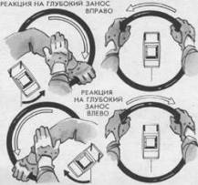

Глубокий занос
Причиной возникновения заноса большой амплитуды почти всегда является грубая ошибка водителя (неготовность к экстренным действиям, торможение с длительным блокированием колес, резкий непрогнозируемый маневр, “доворот” на дуге поворота и др.). Если компенсаторные действия не выполнены в начальной фазе потери устойчивости (см. прием 35), то занос усиливается и в конечном итоге может привести к вращению автомобиля.
Автомобиль стабилизируется компенсаторным рулением (поворотом рулевого колеса в сторону заноса) и прикрытием дросселя. Однако амплитуды рывкового руления без перехвата (из исходного положения “10 – 2” или “9 – З” в положение “12—4” или “8—12”) оказывается недостаточно, чтобы прекратить занос. Поэтому необходим “доворот” рулевого колеса одной рукой из положения “12” в положение “4” или “8”. Другая рука по кратчайшему пути переводится вверх в зону над цифрой “12”. Ее функция – подстраховка. Если требуется увеличить амплитуду руления, она тотчас повернет рулевое колесо из положения “12” в положение “4” или “8”. Если критическая ситуация миновала, то она примет участие в выравнивании автомобиля.
Если автомобиль стабилизируется на прямом участке, например во время экстренного торможения, то после реакции на занос тотчас выровняйте колеса.
Глубокий занос может быть результатом произвольного действия водителя в тех случаях, когда он используется как элемент техники экстренного торможения боковым соскальзыванием (см. прием 45). В этом случае нет необходимости выравнивать автомобиль, а лучше сохранить угол заноса переменным дросселированием и компенсаторным рулением. Этот способ очень эффективен для гашения скорости на входе или дуге поворота.
На крутом повороте с обледенелым покрытием произвольный управляемый (!) занос может применяться как способ самостраховки. Он позволяет удержать автомобиль на дуге поворота за счет использования части мощности двигателя для противодействия центробежной силе.
При экстренном объезде препятствия на скользкой дороге, выносе автомобиля на обочину или полосу встречного движения обученный водитель произвольно выбирает угол заноса с учетом радиуса поворота, коэффициента сцепления и особенностей критической ситуации (в зависимости от ширины проезжей части, наличия помех, маневров других участников, опасности ДТП).
Процесс управления автомобилем в глубоком заносе требует обостренного “чувства автомобиля”, высоких координационных способностей, автоматизма навыков и прогнозирования поведения автомобиля в зависимости от управляющих действий водителя.
Кроме своевременной реакции на занос, необходимы:
– высокая скорость руления, достигаемая рулением двумя руками на боковом секторе рулевого колеса (см. прием 5), рулением одной рукой с перекатом через тыльную сторону кисти (см. прием 4);
– непрерывное поисковое уравновешивающее руление, позволяющее стабилизировать автомобиль в заносе (исключить самовыравнивание и непроизвольное вращение);
– переменное дросселирование, смягчающее резкое скольжение задней оси, обеспечивающее дозированное подтормаживание и загрузку передней оси.

Если вам не удалось стабилизировать автомобиль на ранней стадии заноса, то после рывка двумя руками выполните “доворот” одной из рук, которая окажется в верхнем секторе рулевого колеса; одновременно “прикройте газ”. Лучше выполнять “доворот” левой рукой, чтобы освободить правую для экстренного включения понижающей передачи. Этот прием поможет повысить тягу двигателя, чтобы преодолеть центробежную силу, выбрасывающую автомобиль с дороги